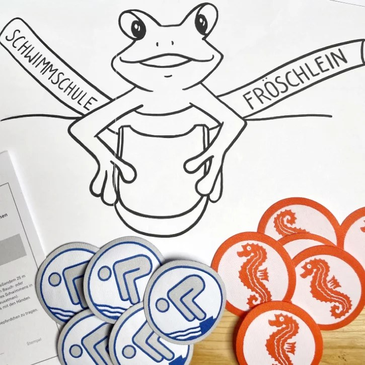
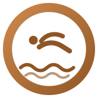
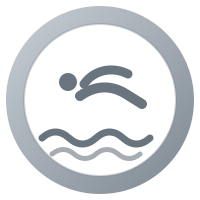
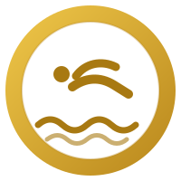

Rund ums Schwimmen
Anforderungen Schwimmabzeichen
Was müssen Kinder können, um Seepferdchen, Bronze, Silber oder Gold zu erhalten? Hier findet ihr die Prüfungsanforderungen auf einen Blick.

Seepferdchen
Der erste Schritt: Wassergewöhnung und erste Schwimmbewegungen.
- Sprung vom Beckenrand
- 25 m Schwimmen in Bauch- oder Rückenlage (Grobform genügt)
- In Bauchlage erkennbar ins Wasser ausatmen
- Einen Gegenstand mit den Händen aus schultertiefem Wasser heraufholen
- Kenntnis der Baderegeln
Das Seepferdchen ist ein Frühschwimmerabzeichen und noch kein Nachweis für sicheres Schwimmen.

Bronze
Der Nachweis sicheren Schwimmens.
- Kopfsprung vom Beckenrand
- 15 Minuten Schwimmen, dabei mindestens 200 m
- Davon 150 m in Bauch- oder Rückenlage und 50 m in der jeweils anderen Körperlage
- Lagenwechsel ohne Festhalten
- Einmal ca. 2 m tief tauchen und einen kleinen Gegenstand (z. B. Tauchring) heraufholen
- Kenntnis der Baderegeln

Silber
Mehr Ausdauer und sicheres Tauchen.
- Kopfsprung vom Beckenrand
- 20 Minuten Schwimmen, dabei mindestens 400 m
- Davon 300 m in Bauch- oder Rückenlage (erkennbare Schwimmart) und 100 m in der jeweils anderen Körperlage
- Lagenwechsel ohne Festhalten
- Zweimal ca. 2 m tief tauchen und jeweils einen kleinen Gegenstand heraufholen
- 10 m Streckentauchen mit Abstoß vom Beckenrand
- Ein Sprung aus 3 m Höhe oder zwei verschiedene Sprünge aus 1 m Höhe
- Kenntnis der Baderegeln sowie Verhalten bei Erschöpfung und beim Lösen von Krämpfen

Gold
Für geübte Schwimmer:innen mit vielseitigem Können.
- Startsprung und 25 m Kraulschwimmen
- Startsprung und 50 m Brustschwimmen in höchstens 75 Sekunden
- 30 Minuten Schwimmen, dabei mindestens 800 m (davon 650 m in Bauch- oder Rückenlage und 150 m in der jeweils anderen Körperlage, Lagenwechsel ohne Festhalten)
- 50 m Rückenschwimmen mit Grätschschwung ohne Armtätigkeit oder 50 m Rückenkraul
- 10 m Streckentauchen aus der Schwimmlage (ohne Abstoß vom Beckenrand)
- Aus ca. 2 m Tiefe drei kleine Gegenstände innerhalb von 3 Minuten heraufholen (höchstens 3 Tauchversuche)
- Ein Sprung aus 3 m Höhe oder zwei verschiedene Sprünge aus 1 m Höhe
- 50 m Transportschwimmen (Schieben oder Ziehen)
- Kenntnis der Baderegeln sowie Hilfe bei Bade-, Boots- und Eisunfällen (Selbstrettung und einfache Fremdrettung)
Die Angaben sind eine Zusammenfassung der Prüfungsinhalte des Deutschen Schwimmverbandes (DSV). Maßgeblich sind die aktuellen Prüfungsbestimmungen des DSV. Die Abzeichen-Grafiken sind Illustrationen.